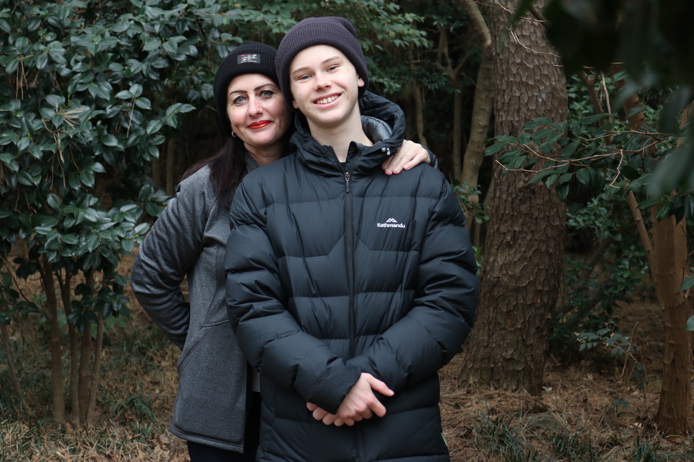

Project One
A project focused on creating a useful tool or application that solves a real-world problem.
Welcome to my personal website! Here you can learn more about me, what I do, and what I want to become.

My name is Douglas Vanderland, and I am a recent Computer Science graduate from Flinders University. I have a strong passion for everything technology-related, and I am constantly seeking new opportunities to learn and grow every day. I have a range of experience in technical and non-technical areas, including programming, web development, networking and project management.
A project focused on creating a useful tool or application that solves a real-world problem.
A portfolio or technical project demonstrating coding skills, design thinking, and implementation quality.
An ongoing idea or prototype that reflects my interests and continued learning in technology.
fill
- I was responsible for reading and recording utility meters, ensuring accurate data collection for billing purposes. This role required attention to detail, time management, and effective communication with customers.